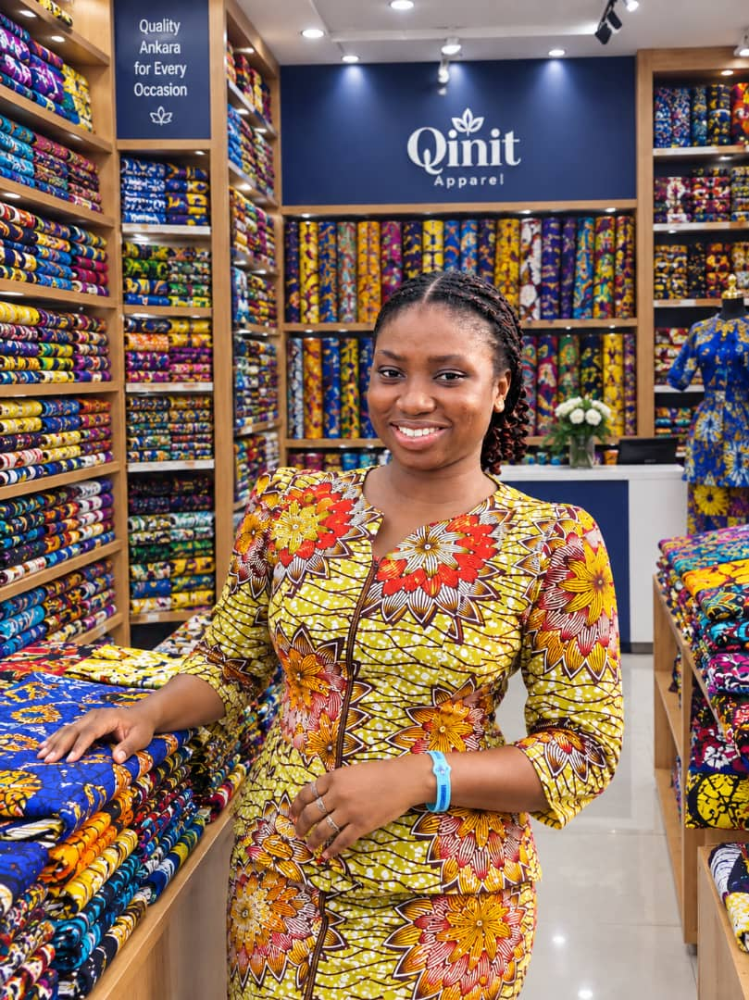

Welcome to Qinit Apparel
Step into Elegance, Wear Your Royalty.
Discover an exquisite collection of premium Ankara prints, crafted for those who value authenticity, sophistication, and timeless style. From vibrant statement patterns to subtle, high-grade weaves, we offer top-tier African fabrics tailored to elevate every occasion without breaking the bank.
Whether you are dressing for a wedding, aso ebi event, or everyday elegance, Qinit Apparel is your trusted destination for quality African fabric in Akure, Ondo State and beyond.

Our Story
Qinit Apparel was born from a deep love of African textile heritage and a desire to make premium Ankara fabrics accessible to everyone. We noticed that quality and affordability rarely came together so we set out to change that.
Starting from Millennium Oda Road, Akure, we have grown into a trusted name for individuals, tailors, event coordinators, and resellers who refuse to compromise on quality. Every fabric we stock is carefully selected for its vibrancy, durability, and authentic African craftsmanship.
Today, we serve customers across Nigeria, offering three flexible ranges so you can get exactly what you need no more, no less.
What We Stand For
These values guide everything we do at Qinit Apparel.
Authenticity
Every print we carry celebrates genuine African textile tradition no imitations, no shortcuts.
Quality First
We hand-pick fabrics that meet our strict standards for colour fastness, texture, and craftsmanship.
Affordability
Premium Ankara should not be a luxury. We keep our prices fair so everyone can dress with royalty.
Community
We support tailors, resellers and local creatives by supplying the fabrics that power their businesses.
Speed & Trust
Quick replies on WhatsApp, honest availability updates, and dependable delivery always.
African Pride
We celebrate Africa through every yard of fabric bold, beautiful, and unapologetically ours.
Ready to Wear Your Royalty?
Browse our fabric ranges or reach out to us on WhatsApp, we reply fast and help you find the perfect fabric.